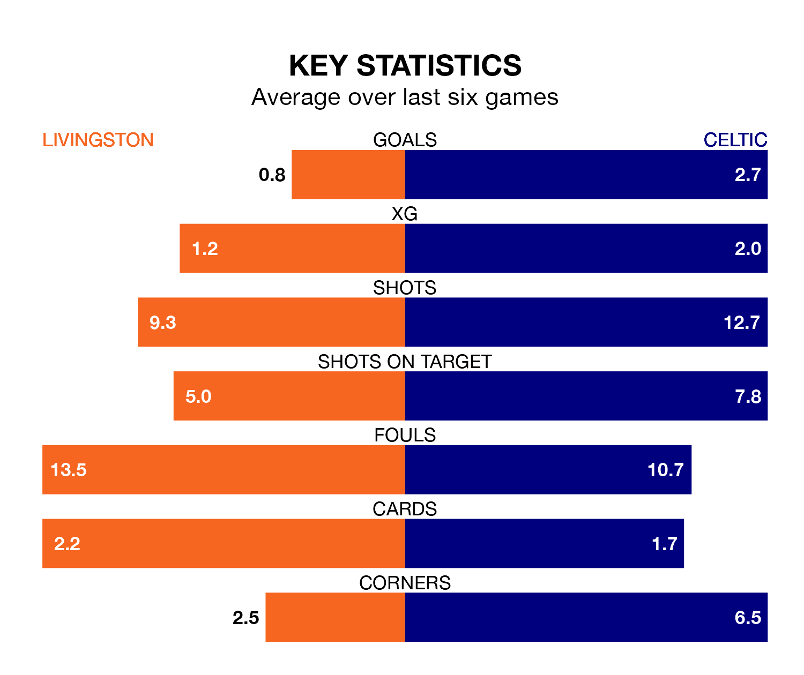

Relegation candidates Livingston face a challenge against high-flying Celtic at the Tony Macaroni Arena on Sunday.
Livingston are rooted to the bottom of the Premiership table, and have picked up just three wins and eight draws in their 30 games to date.
The Bhoys, meanwhile, are second in the standings with 71 points, having won 22 and drawn five, and are two points behind table-toppers Rangers.
With 71 goals in 30 games so far this season, Celtic are the league's highest scorers with 2.4 goals per game. And they are conceding fewer than average, letting in 23 goals at a rate of 0.8 per game.
Livingston, meanwhile, are below average scorers, with 0.7 goals per game, compared to a league average of 1.3. They have conceded 1.7 goals per game.
In the last 10 years, Livingston and Celtic have played each other on 19 occasions. Livingston won two of them, Celtic 11, and they drew six times.
On average, Livingston scored 0.7 goals and the Bhoys 2.1 in those matches.
Their last meeting was on March 10, when Celtic won 4-2 at home.
In Joe Hart, the Bhoys can rely on one of the league's safest pair of hands. He has kept 11 clean sheets in his 29 appearances this season, and only two other 'keepers – Rangers's Jack Butland and Hearts's Zander Clark – have been able to prevent the opposition scoring on more occasions in the Premiership.
In the hosts' net, Shamal George has five clean sheets in 24 games. He has conceded a goal every 63 minutes, more than twice as often as the 134 minutes between goals for Hart.
Livingston are in bad form in the Premiership, with one win and a draw from their last six games.
With four wins and a draw over that period, the away side's form is much better – they have taken 13 points from 18, compared to Livingston's four.
Livingston's last match was on March 16, a 3-0 loss against Hibernian.
Celtic beat St. Johnstone 3-1 last time out, also on March 16, with James Forrest, Kyogo Furuhashi and Nikolas-Gerrit Kühn on the scoresheet.
Sunday's match will be refereed by Don Robertson, who has taken charge of 13 Premiership games so far this season, issuing four red cards and booking 45 players. He has awarded four penalties.
The last Livingston game Robertson refereed was a 2-0 home win against Motherwell on October 7. His last Celtic match was their 2-0 loss away at Hearts on March 3.
Updated: 10:31 (UTC), 31/03/24